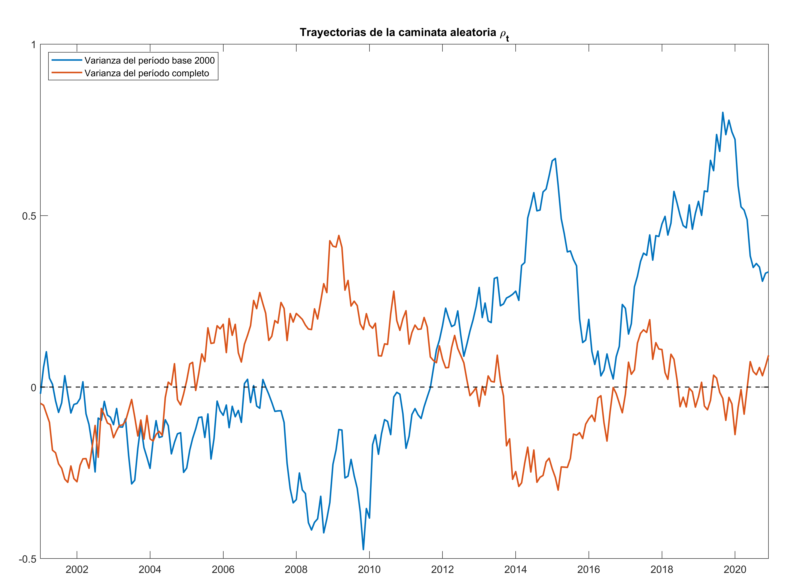
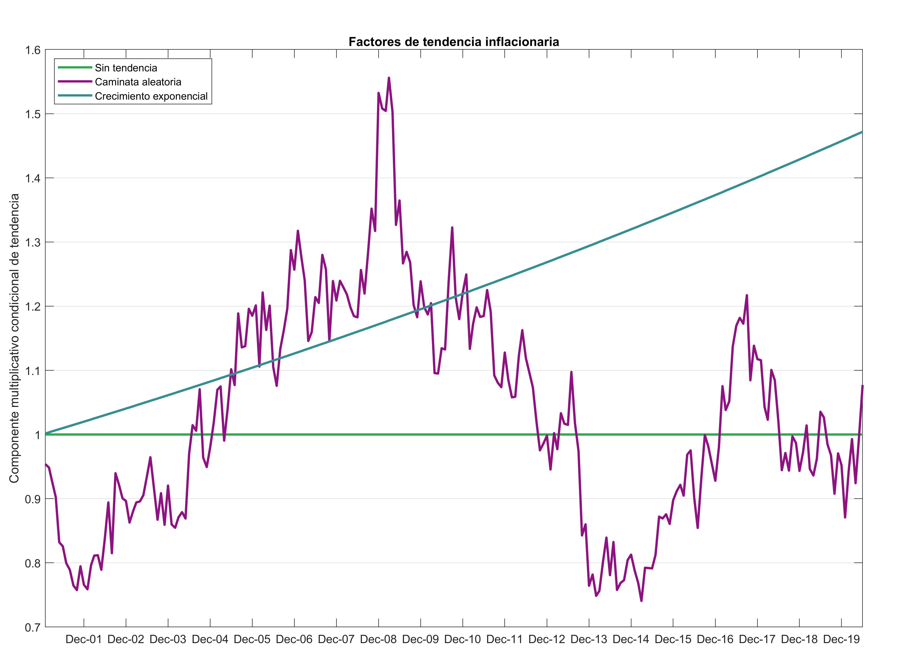
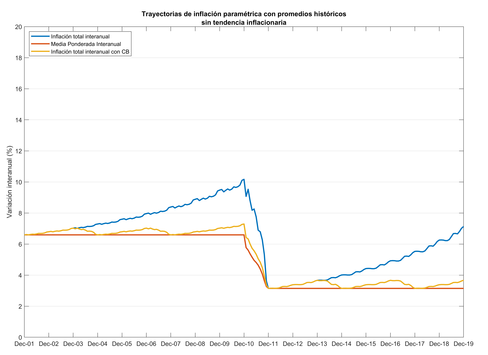
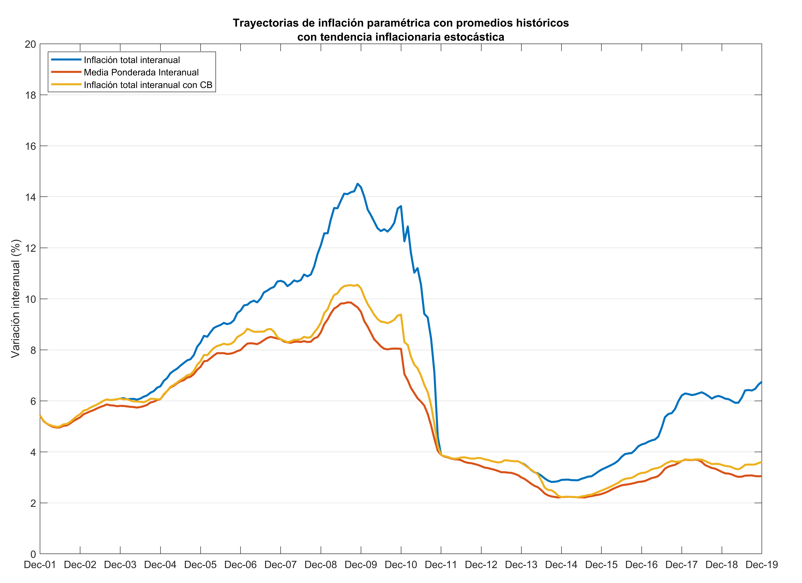
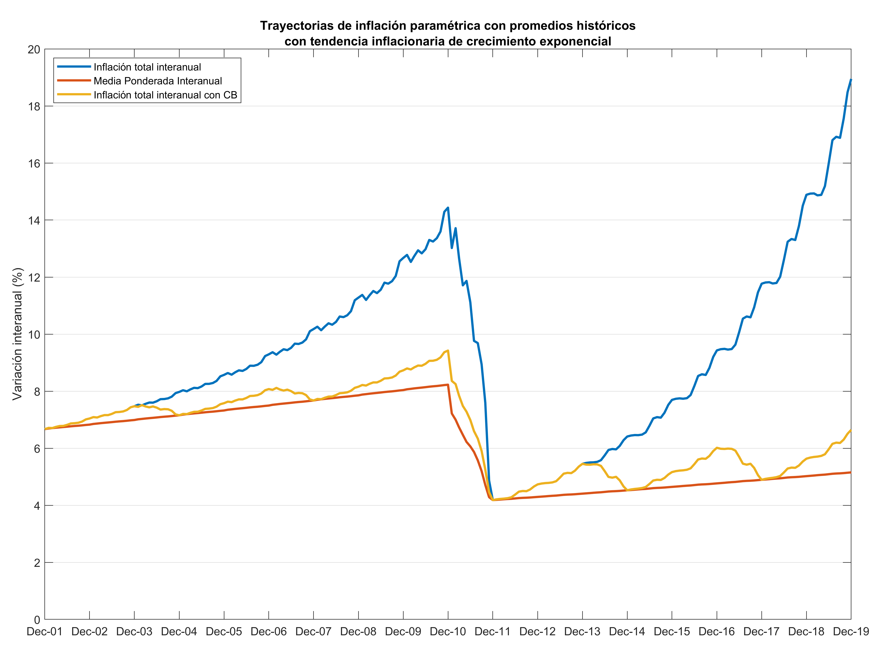

Especificación y calibración del factor de tendencia estocástica
Especificación y calibración del factor de tendencia estocástica de la HEMI¶
Se describe a continuación la propuesta de especificación y de calibración del factor de tendencia estocástica de la herramienta para la evaluación de medidas de inflación (HEMI).
Modelado de la tendencia estocástica¶
Se propone que la tendencia estocástica de la inflación, en la evaluación de medidas de inflación, sea multiplicativa1. Sin embargo, para que haya continuidad en la dirección de la tendencia estocástica, cuando la inflación intermensual (poblacional o muestral) cambie de signo, se propone que el factor multiplicativo sólo afecte a las variaciones intermensuales (de índices de precios los gastos básicos) que tienen signo positivo.
En particular, se propone el modelo siguiente: $$ z_{i,t} = x_{i,t} \cdot y_{t} $$ en donde z_{i,t} representa la variación intermensual del índice de precios del basto básico i en t, x_{i,t} la variación intermensual del índice de precios del basto básico i en t sin tendencia estocástica y y_t es el componente multiplicativo condicional de tendencia estocástica en t.
La tendencia estocástica multiplicativa es una función exponencial (cuando la variación intermensual del índice de precios del gasto básico, sin tendencia estocástica, es positiva) o es una constante igual a uno (cuando la variación intermensual del índice de precios del gasto básico, sin tendencia estocástica, es negativa). En particular:
En donde \rho_t tiene la especificación de una caminata aleatoria: $$ \rho_t = \rho_{t-1} + \varepsilon_t, \quad \rho_0 = 0, \quad \varepsilon_t\sim N(0, \sigma_\varepsilon^2) $$
Calibración de la varianza del ruido blanco¶
Para generar las series de tiempo correspondientes al parámetro poblacional y a las simulaciones muestrales, la variable \rho_t tiene valor inicial cero y luego evoluciona de acuerdo con su ley de movimiento (caminata aleatoria). Para este propósito, los valores de los choques estocásticos t se extraen de una distribución normal con media cero y con varianza \sigma_\varepsilon^2.
El valor de \sigma_\varepsilon^2 se obtiene a partir de los datos históricos observados de inflación de Guatemala, de la manera siguiente:
$$ \sigma_\varepsilon^2 = \text{Var}(\delta_t) $$
en donde
$$ \delta_t = \frac{1}{12} \sum_{j=1}^{12} \left(q_{t-j} - q_{t-j-1} \right) $$
corresponde a la media móvil de 12 meses de las diferencias en las variaciones intermensuales del IPC q_t del período t en los datos históricos.
Al aplicar este proceso se obtiene la siguiente gráfica de variaciones intermensuales del IPC y sus medias móviles de 12 meses. Como se puede apreciar, la varianza es mucho menor para las medias móviles.

En la siguiente tabla se presentan las estimaciones de varianza y desviación estándar de las variaciones intermensuales del IPC en los dos períodos del IPC (así como en el período completo). Los valores se muestran en puntos porcentuales para las desviaciones estándar. Se puede resaltar que los valores de desviación estándar sin suavizamiento de media móvil parecen ser muy grandes, y por lo tanto, inadecuados para utilizarse en bruto para el proceso de calibración de varianza de la tendencia de caminata aleatoria.
| Volatilidad | Base 2000 | Base 2010 | Período completo |
|---|---|---|---|
| Varianza | 0.2713 | 0.2162 | 0.2435 |
| Desviación estándar | 0.5209 | 0.4650 | 0.4935 |
| Varianza media móvil | 0.003490 | 0.001868 | 0.00269 |
| Desviación estándar media móvil | 0.0591 | 0.0432 | 0.0519 |
Ahora se procederá a computar una señal de ruido blanco utilizando la varianza de la media móvil de 12 meses de las variaciones intermensuales del IPC de la base 2000 y del período completo. A continuación, como ejemplo, se muestra una de las realizaciones:

Como se puede observar, la volatilidad de la señal de ruido blanco utilizando la varianza del período completo (\text{Var}(\delta_t) = 0.0027) es ligeramente menor a la volatilidad de la señal de ruido blanco que utiliza la varianza solamente de la base 2000 (\text{Var}(\delta_t) = 0.0035); aunque, en apariencia, la diferencia de volatilidad no parece muy grande.
A continuación se procederá a utilizar la trayectoria de la caminata aleatoria calibrada a la varianza del período completo para computar el factor de tendencia estocástica de la inflación y las correspondientes trayectorias paramétricas de inflación. Esto permitirá evaluar si la volatilidad calibrada a través de este procedimiento es adecuada; es decir, si permite que la evolución de la tendencia estocástica genere cambios significativos, pero no demasiado grandes, en la trayectoria de la inflación interanual.
Tendencia en las trayectorias de inflación¶
En esta sección se describe cómo quedan los parámetros poblacionales de inflación resultantes al utilizar tres tipos de tendencia multiplicativa.
- Un factor constante igual a uno.
- Un factor de tendencia estocástica, calibrado como se explica en el apartado anterior.
- Un factor de crecimiento exponencial determinístico, calibrado para reflejar un crecimiento tendencial del 2% interanual.
En la siguiente figura se aprecian los tres diferentes factores multiplicativos de tendencia que podrían aplicarse en el proceso de cómputo de inflación paramétrica y en el remuestreo.

Como referencia, se muestran las trayectorias de inflación paramétrica sin tendencia.

Seguidamente se muestran las trayectorias de inflación paramétrica aplicando el factor tendencial multiplicativo que se muestra en color morado en la figura denominada "Factores de Tendencia Inflacionaria".

Como se observa, se obtienen trayectorias de inflación paramétrica con tendencia estocástica y moderada volatilidad, por lo que el método de calibración puede considerarse adecuadamente escalado para modelar la varianza del factor multiplicativo de la tendencia.
Finalmente, a continuación se muestran las trayectorias de inflación paramétrica aplicando el factor multiplicativo de tendencia de crecimiento exponencial determinístico que se muestra en color azul en la figura denominada "Factores de tendencia inflacionaria".

-
No se plantea un proceso de tendencia estocástica aditiva para evitar que la adición de un término común imponga una correlación espuria entre las medidas de inflación muestrales y la medida de inflación paramétrica. ↩